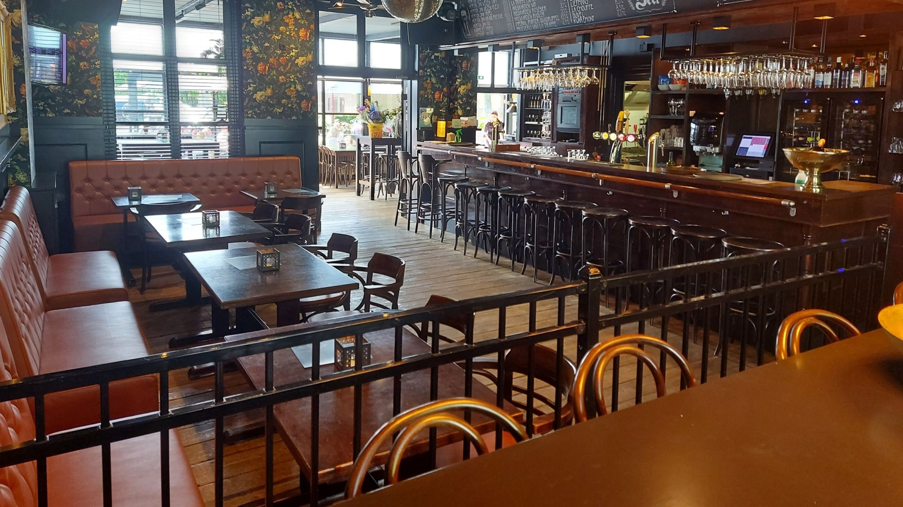
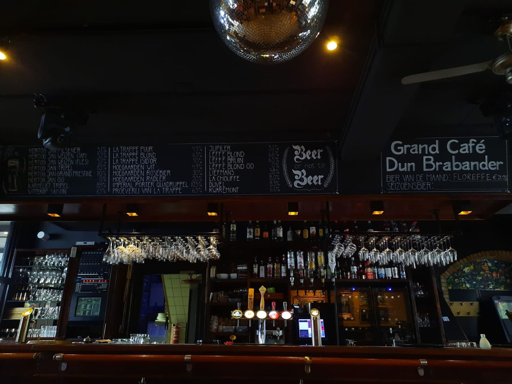
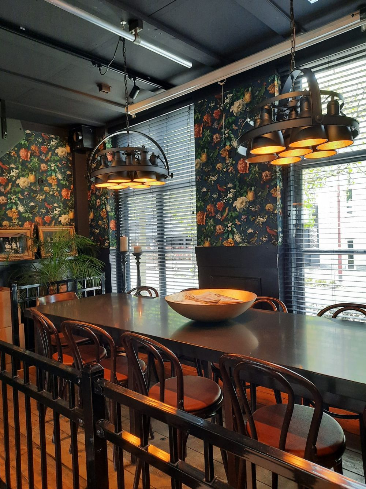
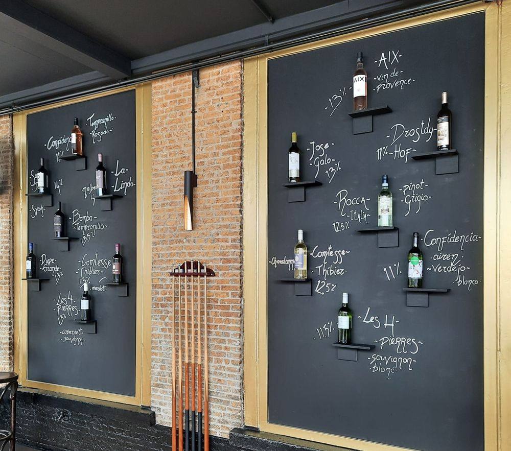
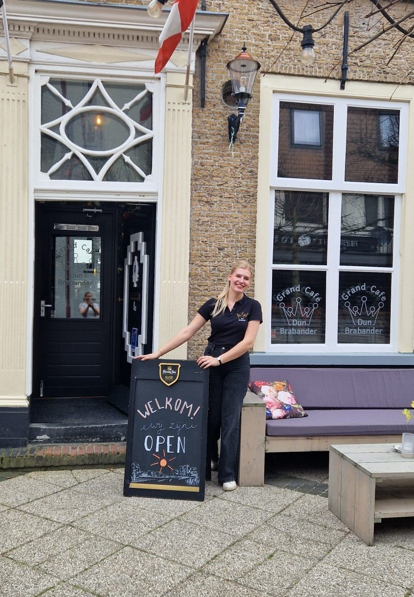

Een plek waar iedereen zich thuis voelt
Gezellig grand café in het monumentale ouwe mannenhuis aan de Kerkstraat in Made. Voor een drankje aan de bar, een avond met vrienden of een mooi feest.
Bij Dun Brabander
Voor jong en oud, van een biertje op woensdagmiddag tot een feest met de hele familie. Klik voor meer info.
Onze drankkaart
Van een vers getapt Brabanderke tot een Espresso Martini.
Cuvée des Trolls
Elke maand kiezen we een nieuw bier van de maand. Even proeven?
- 8 bieren van de tap, waaronder Brabanderke pils en triple
- Ruim 20 speciaalbieren op fles
- Alle cocktails € 8,50
Prijzen per glas, tenzij anders vermeld.



Het ouwe mannenhuis
Dun Brabander zit in het monumentale ‘ouwe mannenhuis’ aan de Kerkstraat. Vroeger konden welgestelde mannen zich hier inkopen voor hun oude dag. Ze werden verzorgd door de nonnen uit het klooster ernaast. De kapel van dat klooster staat nog altijd aan het eind van de straat.
Binnen vind je een ruim café met podium en bar en een sfeervolle serre. Samen is er plek voor zo'n 180 gasten, voor een gezellige borrel of een besloten feest.
- Monumentaal pand
- Café met podium
- Sfeervolle serre
- Ruimte voor ca. 180 gasten

Sinds april onder leiding van Indra
“Dun Brabander moet een plek blijven waar iedereen zich thuis voelt.”
Op 1 april 2026 nam Indra het café over. Met 21 jaar, en bijna afgestudeerd van de Hotelschool, is ze de jongste kastelein van Made. De vertrouwde sfeer en gezelligheid blijven zoals je gewend bent.
John en Inge van Vugt hebben Dun Brabander de afgelopen jaren met veel toewijding opgebouwd tot een warme ontmoetingsplek voor jong en oud. Daar bouwen we op verder.
Reserveren of langskomen
Voor de aanschuiftafel of een feest even bellen. Voor een drankje loop je gewoon binnen.